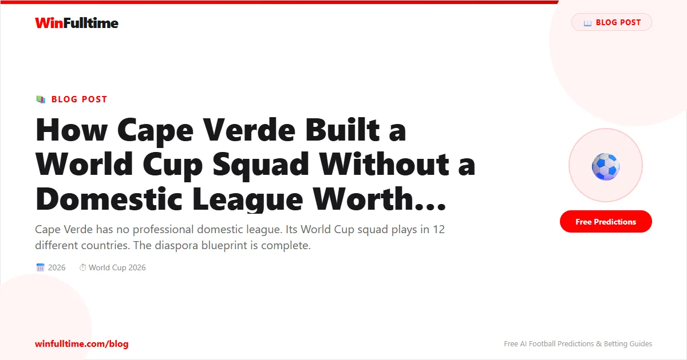

On October 13, 2025, Cape Verde became the third-smallest nation by population ever to qualify for a men's World Cup. Only Iceland in 2018 and Trinidad and Tobago in 2006 have done it from a smaller population base. But that's where the comparisons end. Iceland's squad was built on a domestic football culture nurtured by indoor facilities and UEFA development funding. Trinidad's was anchored by players from the local Pro League. Cape Verde's squad is something else entirely.
Consider this: more players in Cape Verde's 2026 World Cup squad were born in Rotterdam, Netherlands than in Praia, the nation's capital. The squad represents 25 clubs across 14 countries. Their centre-back was recruited via LinkedIn. Their starting goalkeeper was born in Portugal. Their most creative midfielder learned his football in the Netherlands, their defensive midfielder in France, and their striker in the Dutch second division. And their best defender, Logan Costa, was born in France and plays for Villarreal in La Liga.
Cape Verde does not have a professional domestic league worth playing in. So they built their team from the global diaspora instead.
Cape Verde is an archipelago of ten volcanic islands in the Atlantic Ocean, roughly 570 kilometres off the coast of Senegal. Its population of approximately 600,000 is spread across nine inhabited islands. The country's football league is semi-professional at best. There is no television deal, no significant sponsorship, no infrastructure to develop players to a professional standard. The best young players on the islands have always faced a choice: stay and play in a league that cannot pay a living wage, or leave.
Most leave. The Cape Verdean diaspora — estimated at roughly two million people, more than three times the population of the islands themselves — is concentrated in Portugal, the Netherlands, France, the United States, and Angola. And it is from this diaspora that the national team has been built.
Cape Verde's qualification campaign was masterminded by coach Pedro Leitão Brito, known universally as Bubista. Bubista himself was born on the islands, captained Cape Verde for nearly a decade, and played professionally in Portugal, Spain, and Angola. When he took over as head coach, he inherited a team that had never come close to qualifying for a World Cup. His solution was simple: find every Cape Verdean-eligible player in Europe and convince them to commit.
The federation hired US-based recruitment specialist Tony Araujo to systematically identify eligible players across Europe and the Americas. They targeted the sons of Cape Verdean immigrants in the Netherlands, France, Portugal, and the United States. They tracked players through academy systems, monitored their eligibility, and maintained relationships with families. It was, in effect, a global scouting operation run by a federation with a fraction of the budget of the African giants they were competing against.
The strategy paid off. Cape Verde's qualifying campaign saw them finish top of Group D in CAF qualifying, ahead of Cameroon — a nation of 27 million with multiple African Cup of Nations titles and eight previous World Cup appearances. Cape Verde beat Cameroon home and away. They did it without a single player from their own domestic league.
| Player | Position | Club | Country of Birth |
|---|---|---|---|
| Logan Costa | CB | Villarreal | France |
| Roberto Lopes | CB | Shamrock Rovers | Ireland |
| Steven Moreira | RB | Columbus Crew | France |
| Jamiro Monteiro | CM | PEC Zwolle | Netherlands |
| Deroy Duarte | CM | Ludogorets | Netherlands |
| Laros Duarte | CM | Puskas Akademia | Netherlands |
| Dailon Livramento | ST | Casa Pia | Netherlands |
| Ryan Mendes | RW | Igdir | Cape Verde |
| Garry Rodrigues | LW | Apollon Limassol | Netherlands |
| CJ dos Santos | GK | San Diego FC | United States |
Nowhere is the diaspora strategy more visible than in Rotterdam. The city has a Cape Verdean community of roughly 20,000 — small but deeply integrated into Dutch football culture. Six players in Cape Verde's World Cup squad were born in Rotterdam: Dailon Livramento, Deroy Duarte, Laros Duarte, Garry Rodrigues, and others. They learned football on Dutch pitches, in Dutch academies, under Dutch coaching methods. They speak Dutch with Cape Verdean accents. They return to the islands for family holidays. And they chose Cape Verde over the Netherlands.
Livramento's story is particularly emblematic. Born in Rotterdam to Cape Verdean parents, his mother Marizia is a well-known Cape Verdean singer. His brother Jerzy is part of Broederliefde, a successful Dutch hip-hop group that performed at the qualification afterparty in Praia. Livramento himself was playing in the Portuguese second division when he emerged as the clinical striker Cape Verde had been missing for years. He scored four goals in qualifying, including crucial winners against Cameroon and Angola.
Bubista understood that a squad drawn from a dozen countries risked fragmentation. Players who grew up in the Netherlands speak Dutch. Those from France speak French. Those from Portugal speak Portuguese. Some speak all three. Bubista's solution was simple and controversial: Cape Verdean Creole would be the only language spoken in the national team camp.
"It's the official language of the national team," Bubista said."Sometimes the guys try to speak other languages among themselves, but I don't allow it, to keep our Cape Verdean identity intact." The rule forces players from different diaspora communities to communicate in the language of the islands — reinforcing their connection to the country they represent, even if they were born thousands of kilometres from it.
Cape Verde's best player is also their biggest injury concern. Logan Costa, the Villarreal centre-back, is widely regarded as one of the best defenders at the tournament outside the traditional powerhouses. He is comfortable in possession, dominant in the air, and experienced in La Liga. But he arrives at the World Cup with a long-term injury that has cast doubt on his availability. Cape Verde named him in the squad anyway, a gamble that speaks to how indispensable he is to their chances.
Without Costa, Cape Verde's defence relies on Steven Moreira of Columbus Crew and Roberto Lopes of Shamrock Rovers — both solid professionals, but neither operating at Costa's level. If Costa is fit, Cape Verde have a platform to compete. If not, their debut may be brief.
Cape Verde have been drawn in Group H alongside Spain, Uruguay, and Saudi Arabia. Realistically, their best chance of a result is against Saudi Arabia in Houston. Spain and Uruguay are among the strongest teams in their respective confederations. But Cape Verde have the diaspora factor working for them off the pitch: there are an estimated 500,000 Cape Verdeans living in the United States, concentrated in the Boston area and New England. They will travel to games in numbers that few debutants can match.
"There are roughly two million Cape Verdeans in the diaspora — much larger than the country itself," said journalist Tom Howorth. "Very few fans will travel from the islands because they need to put down a $10,000 to $15,000 deposit just to enter the US. But there is a massive diaspora of half a million Cape Verdeans in the Boston area alone. They will travel in numbers."
Cape Verde may not advance from their group. They may not win a game. But they have already proven something that extends far beyond football: that a nation of 600,000 people, with no domestic league worth speaking of, can compete on the world's biggest stage by embracing the global diaspora that centuries of migration have created. They are the team that LinkedIn built, that Rotterdam raised, and that Bubista unified under a single language. And they are at the World Cup.
Get free daily football predictions for every World Cup match, including Cape Verde's group stage fixtures.
Generate optimized accumulator combinations from today's AI-powered predictions. Set your target odds and get instant ticket suggestions.
Free Ticket Builder →